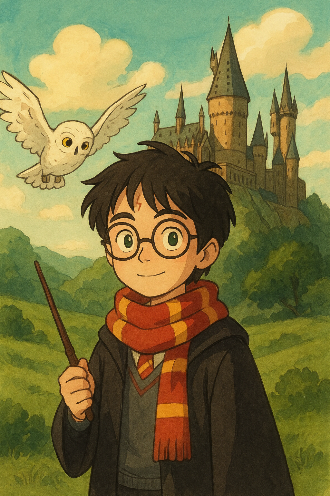
Harry Potter
Harry é o "Menino que Sobreviveu", órfão após Voldemort matar seus pais. Criado pelos tios trouxas, descobre aos 11 anos que é bruxo e enfrenta Voldemort ao longo da série. Valente, leal e humilde, mas às vezes impulsivo. Carrega o peso de sua fama, com determinação para lutar pelo bem.
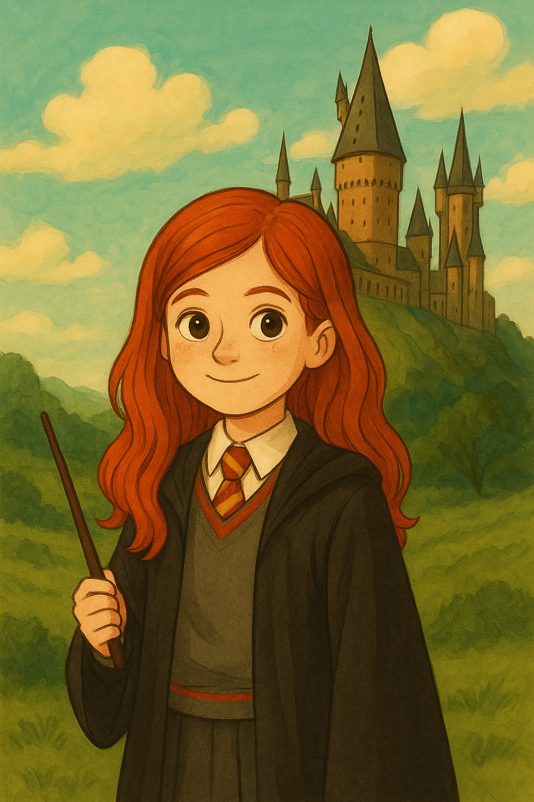
Ginny Weasley
Irmã mais nova de Ron, cresce de uma garota tímida para uma bruxa habilidosa e membro da resistência contra Voldemort. Valente, espirituosa e determinada. Leal e apaixonada, com um senso de humor marcante.
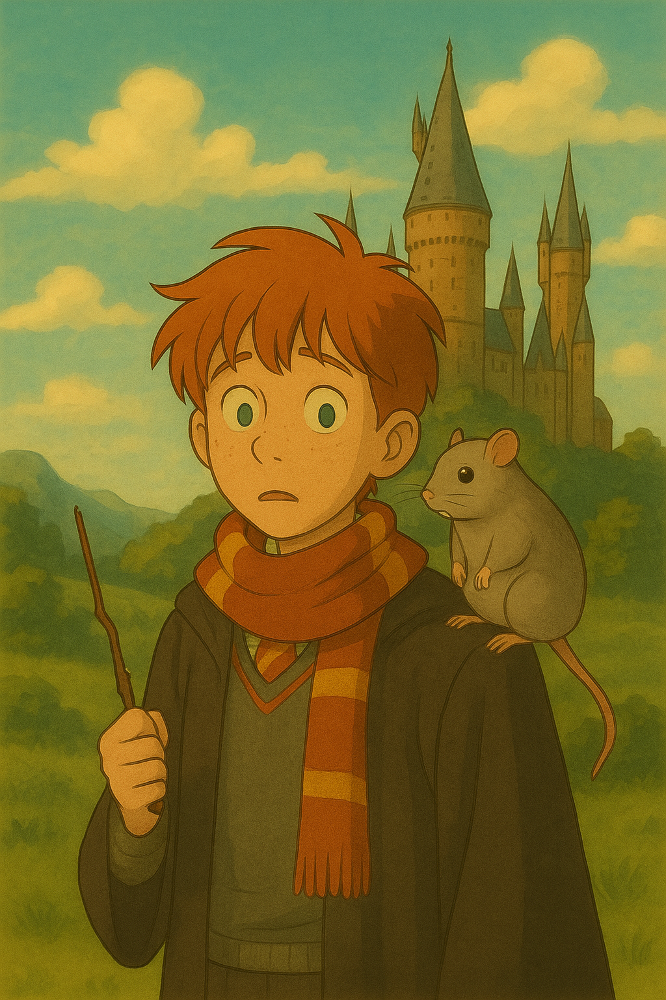
Rony Weasley
Filho de uma família bruxa pobre, é o melhor amigo de Harry. Enfrenta inseguranças, mas cresce como um aliado leal na luta contra Voldemort. Engraçado, leal e caloroso, mas às vezes inseguro e ciumento. Sua coragem se destaca em momentos decisivos.
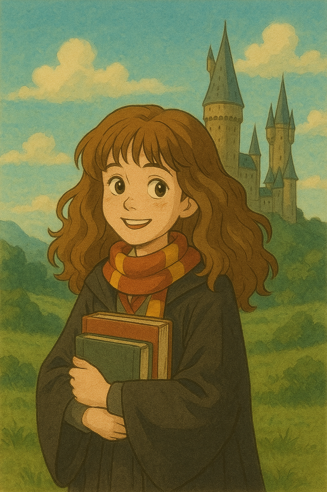
Hermione Granger
Nascida trouxa, é uma aluna brilhante de Hogwarts. Amiga fiel de Harry e Ron, desempenha papéis cruciais contra Voldemort. Inteligente, lógica e trabalhadora. Pode ser mandona, mas é compassiva, corajosa e dedicada à justiça.
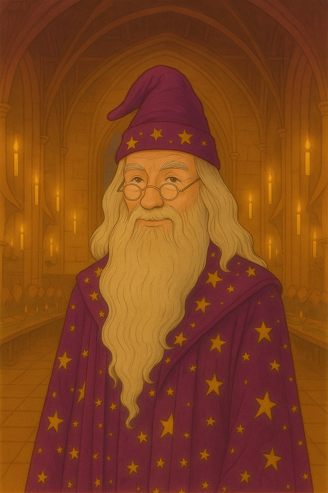
Albus Dumbledore
Em sua juventude, era brilhante e ambicioso, e sua amizade com Gellert Grindelwald o levou a defender a supremacia bruxa, até que a tragédia sua irmã Ariana o fez mudar de ideia. Conhecido por sua sabedoria, bondade e habilidade mágica excepcional, guiou Harry contra Voldemort mesmo após sua morte.
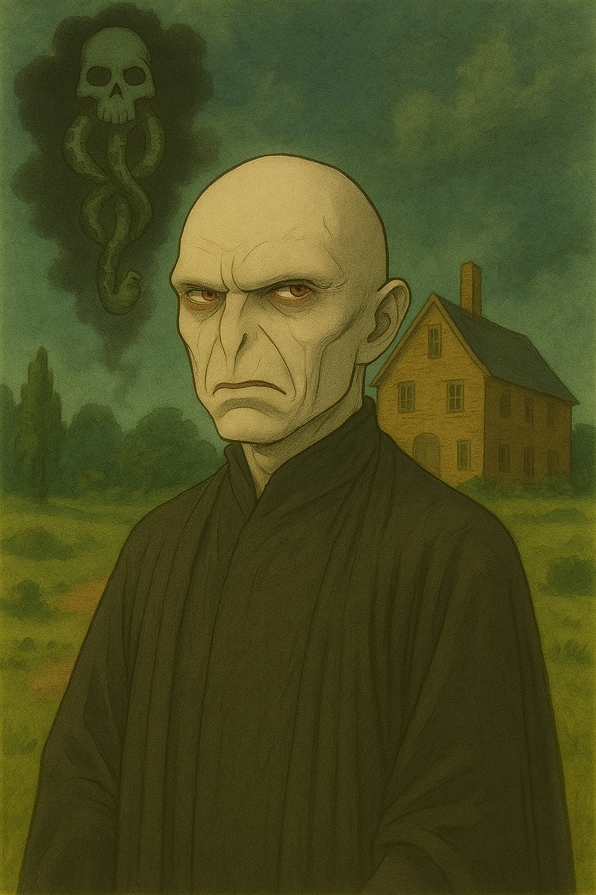
Voldemort(Tom Riddle)
Nascido Tom Riddle, tornou-se o maior bruxo das trevas, buscando poder e imortalidade. Lidera os Comensais da Morte contra o mundo bruxo. Cruel, manipulador e narcisista. Inteligente e carismático na juventude, mas consumido por ambição e ódio.

Rubeus Hagrid
Meio-gigante, guarda-caças de Hogwarts. Amigo leal de Harry, foi expulso da escola na juventude, mas permanece dedicado à instituição. Afetuoso, leal e ingênuo. Ama criaturas mágicas e tem um coração enorme, apesar de sua impulsividade.

Minerva McGonagall
Professora de Transfiguração e vice-diretora de Hogwarts, membro da Ordem da Fênix. Lidera a defesa da escola contra Voldemort. Rígida, justa e inteligente. Protetora e leal, com um senso de dever inabalável.
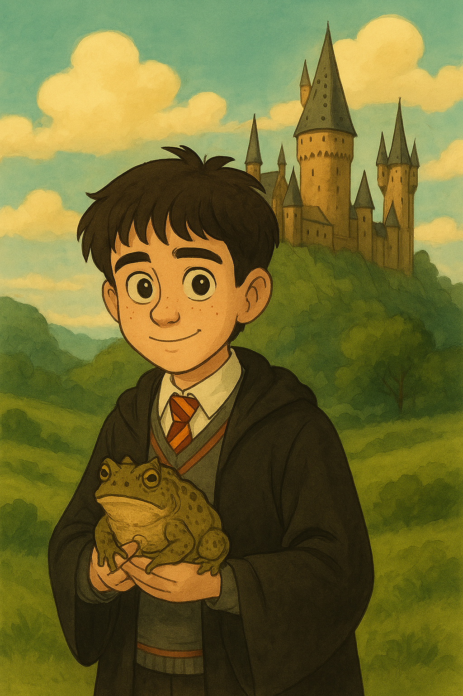
Neville Longbottom
Aluno desajeitado de Hogwarts, criado pela avó após seus pais serem torturados. Torna-se um herói na luta contra Voldemort. Tímido e inseguro inicialmente, mas cresce em coragem, lealdade e resiliência.
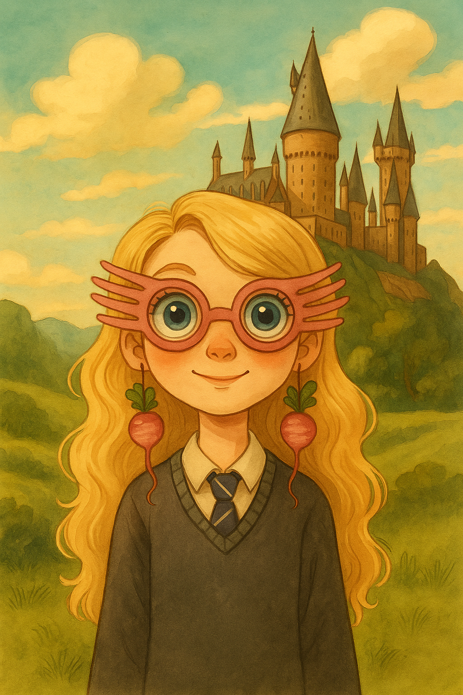
Luna Lovegood
Aluna excêntrica de Hogwarts, filha de um editor de jornal alternativo. Apoia Harry na resistência contra Voldemort. Sonhadora, excêntrica e intuitiva. Bondosa e leal, com uma visão única do mundo.
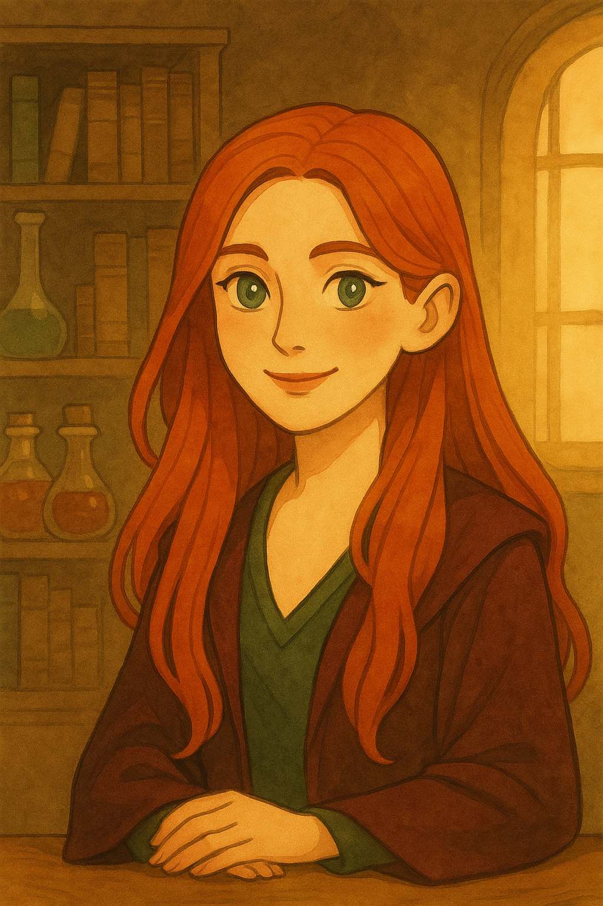
Lilian Potter
Mãe de Harry, brilhante aluna nascida trouxa. Sacrificou-se para salvar Harry, criando uma proteção mágica contra Voldemort. Gentil, inteligente e corajosa. Defensora fervorosa da justiça, com um coração compassivo.
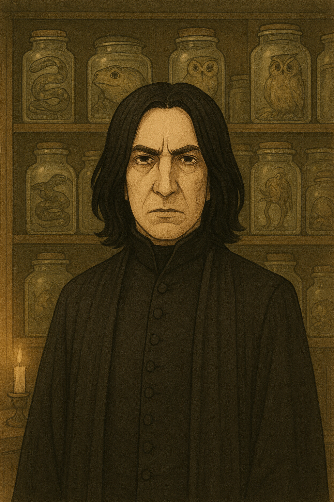
Severus Snape
Professor de Poções em Hogwarts, ex-comensal da morte, com um passado ligado a Lilian Potter. Suas ações revelam uma complexa lealdade. Sombrio, sarcástico e reservado. Apesar de sua amargura, é profundamente leal e movido por amor e culpa.
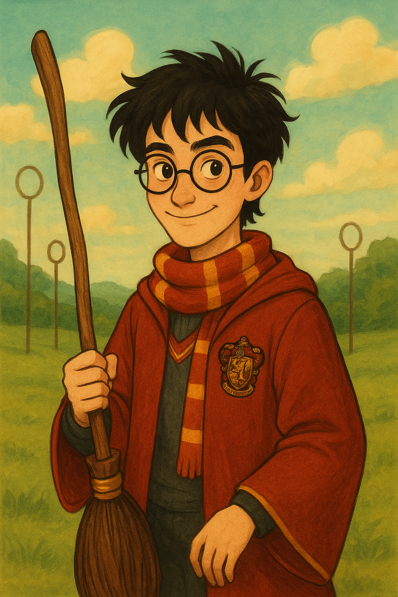
Tiago Potter
Pai de Harry, membro dos Marotos, foi um talentoso aluno de Hogwarts. Morreu protegendo sua família de Voldemort. Confiante, brincalhão e, na juventude, arrogante. Tornou-se maduro, leal e corajoso ao se juntar à Ordem da Fênix.
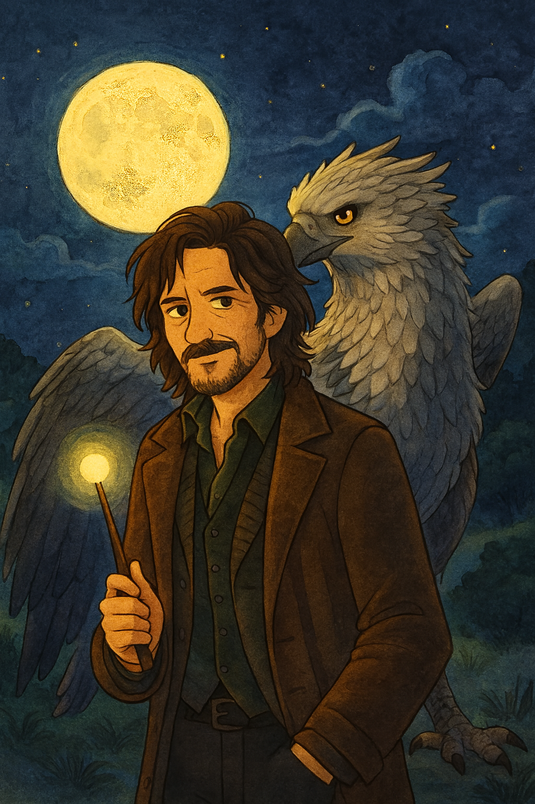
Sirius Black
Padrinho de Harry, membro dos Marotos e da Ordem da Fênix. Escapa de Azkaban após ser injustamente acusado de traição. Leal, rebelde e carismático. Impulsivo, mas profundamente dedicado à família e amigos.
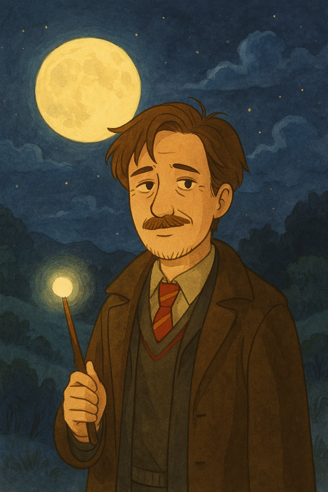
Remus Lupin
É um lobisomem, infectado na infância, o que moldou sua vida com preconceito e isolamento. Foi membro dos Marotos e da Ordem da Fênix. Foi professor de Defesa Contra as Artes das Trevas no terceiro ano de Harry. Gentil, sábio e reservado, além de leal, corajoso e empático e sempre disposto a proteger os outros.
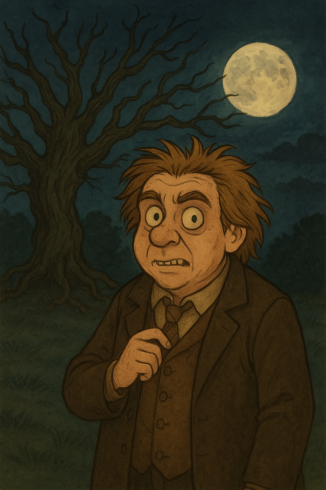
Peter Pettigrew
Membro dos Marotos, traiu os Potters para Voldemort. Vive como servo do Lorde das Trevas após sua ressurreição. Covarde, oportunista e subserviente. Fraco de caráter, busca proteção em figuras poderosas.
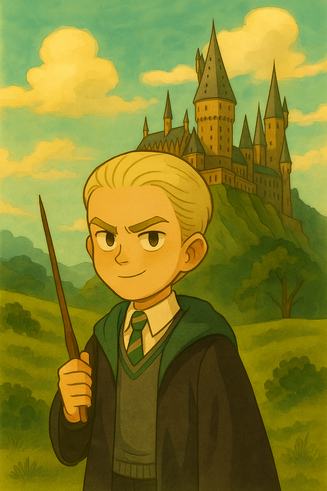
Draco Malfoy
Herdeiro de uma rica família puro-sangue, rival de Harry em Hogwarts. Torna-se Comensal da Morte, mas hesita em sua lealdade. Arrogante, sarcástico e preconceituoso, mas mostra vulnerabilidade e conflitos internos com o tempo.
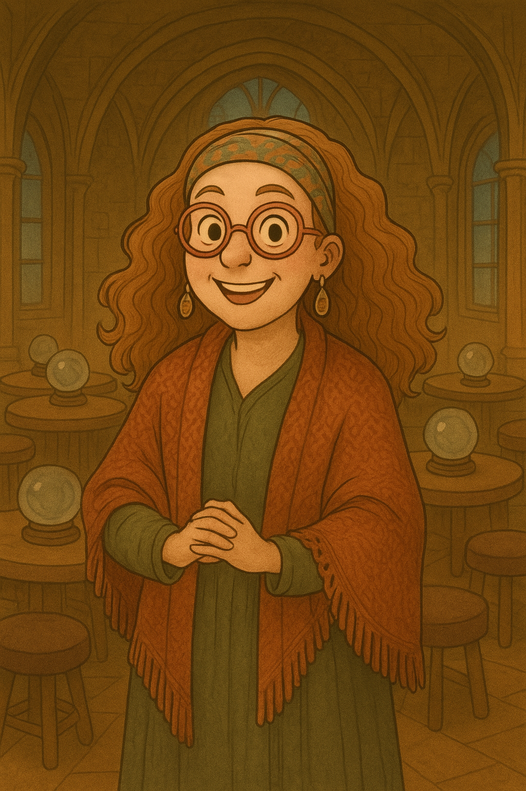
Sybill Trelawney
Sybill Trelawney é a excêntrica professora de Adivinhação, fez a profecia crucial sobre Harry e Voldemort, que desencadeou os eventos da série. Sonhadora, dramática e, embora pareça frágil e desconexa, demonstra lealdade a Hogwarts e possui um talento raro para a verdadeira vidência, ainda que inconsciente.
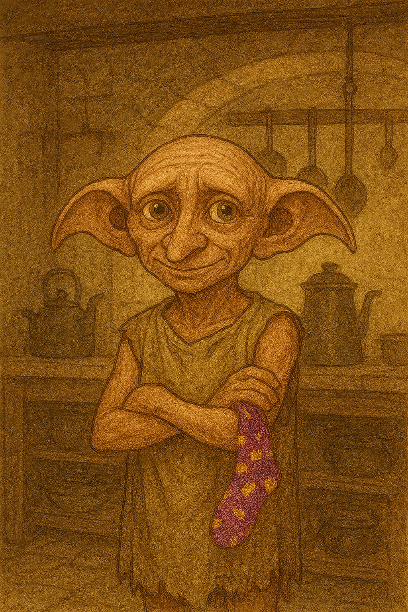
Dobby
Elfo-doméstico que serve a família Malfoy até ser libertado por Harry. Dedica-se a ajudar Harry na luta contra Voldemort. Leal, corajoso e bondoso. Apesar de sua humildade, é determinado a lutar por liberdade e justiça.
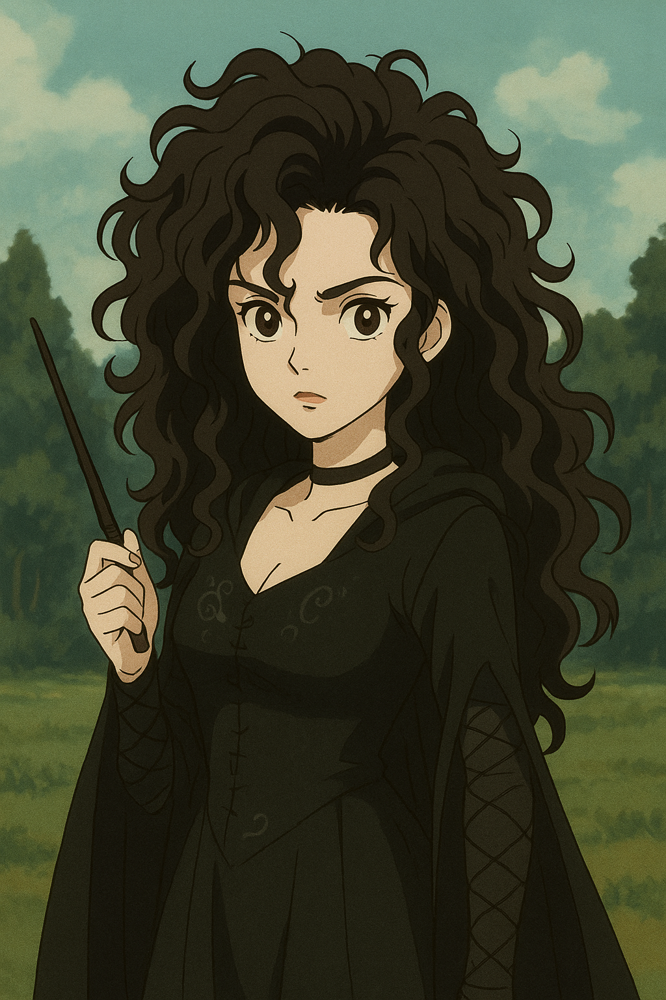
Bellatrix Lestrange
Comensal da Morte fanática, leal a Voldemort. Passou anos em Azkaban e comete atrocidades em seu nome. Sádica, fanática e instável. Inteligente, mas consumida por devoção cega a Voldemort.